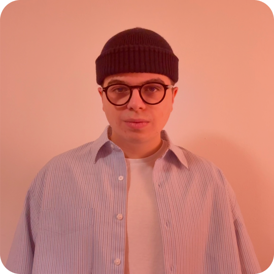

As a Junior Architect, my Caffeinated and HIGHLY ORGANIZED Chaotic mind is constantly exploring new design frontiers, balancing academic training with practical challenges.

Main Character Syndrome
I’m a 22-year-old architecture student, currently navigating my final year at Politecnico di Milano. I like to define myself as dynamic, proactive, and highly organized.
Thanks to an unhealthy obsession with Notion databasesMy goal is to transform academic theory into practical experience, which is a fancy way of saying I’m ready to design things that actually get built. When I’m not stressing over layout design or physical model making, you can probably find me trying to squeeze in a kettlebell workout to offset the hours spent sitting at my desk.
Hard Skills My digital survival kit
- 2D & Drafting: AutoCAD Master of broken hatches
- 3D & BIM: Rhino, Grasshopper, Archicad, Sketchup
- Rendering & Light: D5 Render, Lumion, DIALux evo, Twinmotion Actively testing my PC’s thermal limits
- Graphics & Editorial: InDesign, Illustrator, Photoshop Because everything must look good
- Workflow: Notion My second organized brain
Education Or how I ruined my sleep schedule
- 2022 — Present | Politecnico di Milano
BSc in Architectural Design Currently surviving - 2024 — 2025 | Politecnico di Milano
Progetto del Prodotto d’Arredo Making spaces look good - 2017 — 2022 | Liceo Classico “Empedocle”
High School Diploma Where I learned to read Greek instead of arch